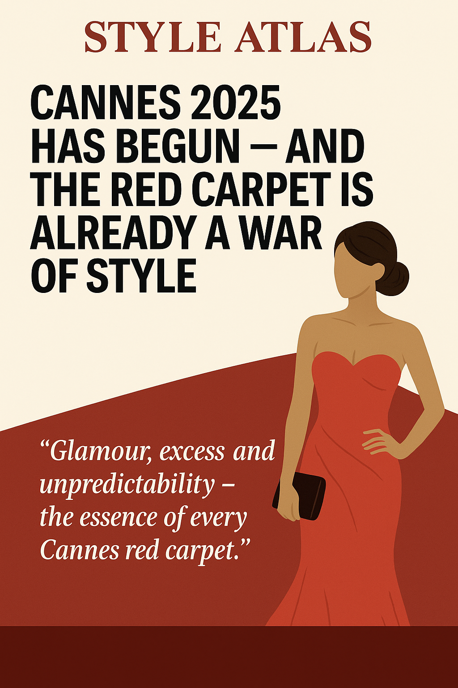

Cannes 2025 Has Begun — And the Red Carpet Is Already a War of Style
The Cannes Film Festival kicked off yesterday, and fashion has already taken center stage — from transparent gowns to unexpected suits, 2025's red carpet is rewriting rules with every step.
With the 77th edition of the Cannes Film Festival officially underway, it’s not just cinema that’s drawing all the lights — it’s the steps leading up to the Palais des Festivals. And this year, the carpet isn’t red. It’s radioactive.
From opening night, it was clear that 2025’s fashion narrative would not be about minimalism. Dresses came dripping in sequins, lace returned with a vengeance, and tailoring? Sharper than ever.
“Cannes isn’t just a film festival — it’s a runway with global broadcast.”
Among the standouts: an architectural metallic gown worn by an emerging Italian actress, a fully sheer but flawlessly styled ensemble by a Korean pop icon, and a French designer debuting a hand-embroidered dress inspired by 1960s cinema posters.
It’s not all chaos. There’s precision. Intent. Even irony. More than once, designers seemed to wink at tradition — twisting it just enough to keep elegance intact while subverting the silhouette.
Beyond the outfits, the message is clear: self-expression wins. There's no longer a single dress code at Cannes. Velvet suits, opera gloves, sculptural collars and combat boots — all walked the same stairs.
What’s behind this shift? TikTok’s rise as a real-time commentator. Fashion houses betting on boldness. And a younger generation of actors who dress like they write the script — not read from it.
The days ahead will bring more premieres and more risks. But one thing is certain: Cannes 2025 has already delivered a visual manifesto — and the week has just begun.
Published: 2025-05-14